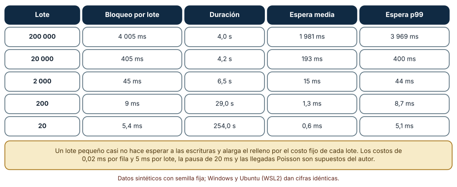
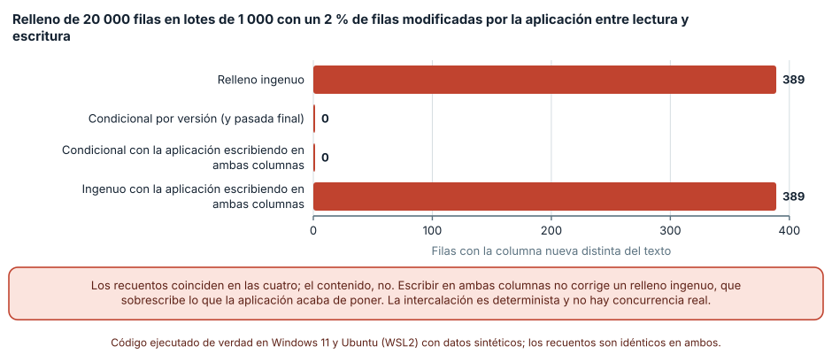
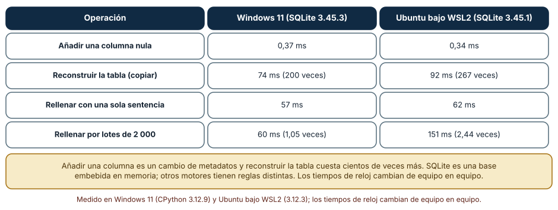

← SE-438 — Migraciones de runtime, lenguaje y framework · ↑ Parte 36 · 📚 Índice completo · 🌐 Portal · SE-440 — Compatibilidad, coexistencia y doble escritura →
Punto profesional y fundamento pedagógico
Punto profesional. La clase existe para que puedas cambiar la forma de los datos de un sistema que sigue recibiendo escrituras, sin detenerlo, sin perder una actualización y con una vuelta atrás creíble. El código se despliega y se revierte en minutos; los datos migrados se quedan. La habilidad es descomponer un cambio de esquema en pasos compatibles con las dos versiones de la aplicación, rellenar sin bloquear ni pisar escrituras concurrentes y verificar el resultado con una comparación y no con la ausencia de errores.
Por qué aparece aquí. Sigue a Migraciones de runtime, lenguaje y framework: esa clase movió el código; esta mueve lo que el código guarda. El caso conductor es el módulo legado de calificaciones, cuya tabla guarda la nota como texto con coma («5,5»), con un estado de una letra, y debe pasar a un esquema con la nota numérica, mientras cientos de docentes siguen modificando notas.
Error conceptual que debe corregir. Creer que una migración de datos es un script que se ejecuta una vez y termina. En un sistema vivo la migración es un proceso con fases, durante el cual conviven dos esquemas, dos versiones de la aplicación y escrituras que ocurren entre cada lectura y cada escritura del relleno. Un script que lee un lote, calcula y escribe sobrescribe, sin saberlo, lo que alguien cambió entre medias.
Secuencia de aprendizaje. Antes de mirar los resultados, predices cuánto bloquea una escritura un relleno de 200 000 filas en un solo lote y en lotes de 2 000; después simulas cinco tamaños de lote con escrituras concurrentes, ejecutas un relleno real con SQLite bajo cuatro estrategias y cuentas las filas con un valor viejo, y mides el costo real de añadir una columna frente a copiar la tabla. La secuencia usa predicción, explicación propia, contraste y recuperación. ICAP distingue participación de construcción de conocimiento; How People Learn II respalda diseñar la práctica con contextos reales y retroalimentación.
Evidencia de aprendizaje. migracion-datos-log.md con la predicción, las tres figuras reproducidas, el plan de fases (expandir, rellenar, escribir en ambos, leer del nuevo, contraer) con la condición para pasar de una a otra, el script de verificación y una nota que separe qué es medido, qué inferido y qué supuesto.
Límite de la conclusión. El tamaño de lote y los costos por fila y por lote son supuestos del autor, simulados en tiempo virtual; el relleno concurrente usa SQLite en memoria con una intercalación determinista de escrituras (no hay concurrencia real); las medidas de tiempo del tercer experimento son lecturas de reloj de un equipo y difieren entre ejecuciones. No se migró ninguna base real ni se usó otra base de datos distinta de SQLite.
Trazabilidad fuente → afirmación
| Fuente primaria u oficial | Afirmación que respalda | Lo que no prueba |
|---|---|---|
| Fowler, «ParallelChange» | Describe el patrón expandir y contraer: añadir la nueva estructura, migrar a los consumidores y retirar la antigua. | No dice cuánto debe durar cada fase. |
| Fowler y Sadalage, «Evolutionary Database Design» | Defiende cambiar el esquema en pasos pequeños, versionados y automatizados, junto al código. | No sustituye el análisis de bloqueos de tu motor. |
| SQLite: ALTER TABLE | Documenta qué cambios de esquema se hacen sin reescribir la tabla y cuáles obligan a reconstruirla. | Describe SQLite; otros motores tienen reglas distintas. |
| Python: sqlite3 | Documenta el módulo usado en los experimentos y su manejo de transacciones. | No dice cómo se comporta tu motor de producción. |
| SQLite: UPDATE | Documenta la sintaxis de actualización con condiciones que permite el relleno por lotes y el condicional. | No describe el bloqueo de otros motores. |
Antes de empezar
Recupera lo aprendido en SE-438: se prefiere un código compatible con ambas versiones antes de cambiar el suelo. La pregunta activa es: si el esquema nuevo ya existiera hoy, ¿qué versión de tu aplicación podría leer y escribir con el viejo y con el nuevo sin saber en cuál de los dos está?
Prerrequisitos
- Haber completado
SE-438o poder explicar qué es un código compatible con dos versiones. - Python 3.11 o posterior con
sqlite3(incluido); los experimentos usan solo la biblioteca estándar. - Saber escribir un
UPDATEcon condición y qué es una transacción.
Problema auténtico
El equipo debía convertir la nota de texto («5,5») a numérica y ejecutó un script de relleno en horario de menor uso. Procesaba lotes de 1 000 filas: leía, convertía y escribía. Durante la ejecución, docentes seguían corrigiendo notas. Al terminar, la comprobación de recuentos dio igualdad (la misma cantidad de filas en ambas columnas), y se cambió la aplicación para leer la columna nueva. Una semana después, una docente reclamó: la nota que había corregido ese día aparecía con el valor antiguo. El relleno había leído el lote, la docente había modificado una fila, y el relleno había escrito el valor numérico del texto viejo encima de su corrección en la columna nueva. Dos horas después de la lectura, el recuento era correcto y el contenido, no. La clase enseña a descomponer, rellenar sin pisar y verificar el contenido.
Objetivos observables
Al terminar podrás:
- descomponer un cambio de esquema en fases compatibles (expandir, rellenar, doble escritura, lectura del nuevo, contraer);
- calcular cómo el tamaño de lote del relleno afecta al bloqueo que sufre una escritura concurrente y a la duración total;
- explicar por qué un relleno que lee y luego escribe puede pisar una escritura concurrente y aplicar una escritura condicional por versión;
- verificar una migración comparando contenido y no solo recuentos;
- medir el costo real de las alternativas de un cambio de esquema y reconocer cuándo una es instantánea y otra reescribe la tabla.
Mapa conceptual
Ver la notación fuente del diagrama
flowchart LR
A[Esquema antiguo] --> B[Expandir: añadir lo nuevo, nulo]
B --> C[Escribir en ambos]
C --> D[Rellenar lo histórico por lotes]
D --> E[Verificar contenido]
E -->|difiere| D
E --> F[Leer del nuevo]
F --> G[Dejar de escribir en el antiguo]
G --> H[Periodo de reposo]
H --> I[Contraer: retirar lo antiguo]
F -->|problema| C
G -->|problema| FEl mapa separa las fases por la reversibilidad: hasta «leer del nuevo» se puede volver sin perder nada; tras «dejar de escribir en el antiguo» el esquema nuevo guarda datos que el antiguo no tiene; «contraer» es el único paso sin retorno. Cada flecha de vuelta es una promesa que solo vale mientras las fases anteriores se mantengan.
Temas y por qué importan
| Tema | Por qué cambia una decisión profesional | Evidencia mínima |
|---|---|---|
| Expandir y contraer | Permite que dos versiones de la aplicación convivan con el mismo dato. | Plan de fases con condición de paso |
| Relleno por lotes | Un lote grande bloquea y uno pequeño tarda demasiado. | Curva de bloqueo y duración por tamaño |
| Escrituras concurrentes y relleno | El relleno puede pisar cambios hechos entre su lectura y su escritura. | Recuento de filas distintas por estrategia |
| Verificación de contenido | Un recuento igual no prueba datos iguales. | Comparación fila a fila o por sumas |
| Costo real de las alternativas | Algunas operaciones son instantáneas y otras reescriben todo. | Medición con y sin reescritura |
Conceptos y decisiones
1. Expandir y contraer
El patrón de cambio paralelo descompone un cambio incompatible en tres movimientos. En expandir se añade la estructura nueva junto a la antigua sin retirar nada: una columna nueva, nula, que ninguna versión de la aplicación necesita todavía. En migrar se llevan los consumidores y los datos a la nueva: la aplicación empieza a escribir en ambas, se rellena lo histórico, se verifica y se cambia la lectura. En contraer se retira lo antiguo cuando nadie lo usa. La clave es que en cada paso existen versiones de la aplicación válidas con el esquema en ese estado y con el estado anterior, lo que permite desplegar y revertir el código sin tocar los datos. La alternativa, cambiar la columna en el sitio (renombrar o cambiar el tipo) mientras la aplicación vieja sigue corriendo, obliga a un corte con ambas versiones exactamente sincronizadas, algo imposible en un despliegue gradual.
2. Relleno por lotes y bloqueo
El relleno convierte los datos históricos al formato nuevo. Hacerlo en una sola sentencia sobre toda la tabla mantiene bloqueos o transacciones largas durante todo el tiempo de la operación, y cualquier escritura concurrente espera. Hacerlo por lotes pequeños limita cada bloqueo al tiempo de un lote y deja entre lotes un hueco para que pasen las demás escrituras. El tamaño de lote es un compromiso: el bloqueo por lote crece con el número de filas, la duración total crece con el número de lotes por su sobrecosto fijo (abrir transacción, confirmar, esperar). Un lote muy grande da una espera larga pero un relleno rápido; uno muy pequeño da casi ninguna espera y un relleno interminable. La elección depende de qué espera tolera la escritura (un objetivo de latencia, SE-373) y de cuánto tiempo puede durar la migración.
3. Escrituras concurrentes: el relleno que pisa
El relleno típico hace tres pasos: leer un lote, calcular el valor nuevo y escribirlo. Entre la lectura y la escritura, la aplicación puede modificar una fila del lote. Si el relleno escribe sin condiciones, sobrescribe el valor nuevo calculado desde el texto viejo, y la columna nueva queda con un dato obsoleto aunque pasen todas las comprobaciones de recuento. Hay tres defensas combinables. La escritura condicional actualiza solo si la fila no cambió desde la lectura (comparando un número de versión o una marca de tiempo). La escritura en ambos sitios desde la aplicación, activada antes del relleno, garantiza que las escrituras nuevas van a la columna nueva; pero por sí sola no protege del relleno, que puede sobrescribirlas con valores calculados del texto antiguo. Y una pasada final de reconciliación revisa las filas donde la columna nueva es nula o difiere. Ninguna sustituye a la verificación de contenido.
4. Verificar contenido, no recuentos
Un recuento igual de filas solo dice que se copió la misma cantidad; no dice que cada fila tenga el valor correcto. La verificación comprueba contenido: para cada fila, el valor nuevo equivale al antiguo según una regla de conversión escrita. En tablas grandes se hace por sumas de verificación por rango (una huella de cada bloque de filas, comparando bloques y entrando solo en los distintos) y por muestreo aleatorio con tasas de detección calculadas, como se verá en SE-440. La verificación debe ser repetible y ejecutable en cualquier momento, no solo al final: cuando hay doble escritura, una comparación periódica es la señal de que ambas columnas siguen alineadas.
5. Costo real: lo instantáneo y lo que reescribe
No todos los cambios de esquema cuestan lo mismo. Añadir una columna nula puede ser un cambio de metadatos casi instantáneo en un motor y una reescritura completa de la tabla en otro. Cambiar el tipo de una columna o añadir una restricción puede obligar a reconstruir la tabla o a validar todas las filas con un bloqueo. Por eso el costo de cada paso se mide en un entorno con el volumen de producción y con el motor real, no se supone. SQLite, usado en los experimentos, añade una columna sin reescribir la tabla, y cambiar una columna existente exige crear una tabla nueva, copiar y renombrar; los demás motores tienen reglas propias. Una buena práctica es escribir cada migración para que sea idempotente (ejecutarla dos veces no daña) y reanudable (si se interrumpe, continúa desde el último lote), porque en producción se interrumpirá.
Cuánto bloquea el tamaño del lote
Se simula en tiempo virtual el relleno de 200 000 filas con un costo supuesto de 0,02 ms por fila y 5 ms por lote, 20 ms de pausa entre lotes para dejar pasar escrituras y 50 escrituras por segundo que esperan si coinciden con un lote.
| Tamaño de lote | Bloqueo por lote | Duración del relleno | Espera media de una escritura | Espera p99 |
|---|---|---|---|---|
| 200 000 | 4 005 ms | 4,0 s | 1 981 ms | 3 969 ms |
| 20 000 | 405 ms | 4,2 s | 193 ms | 400 ms |
| 2 000 | 45 ms | 6,5 s | 15 ms | 44 ms |
| 200 | 9 ms | 29,0 s | 1,3 ms | 8,7 ms |
| 20 | 5,4 ms | 254,0 s | 0,6 ms | 5,1 ms |
Con un solo lote, una escritura espera en promedio casi dos segundos y hasta cuatro. Con lotes de 2 000 la espera p99 baja a 44 ms y el relleno dura 6,5 segundos. Reducir a 200 mejora la espera a 8,7 ms y multiplica la duración por 4,5; con lotes de 20 la espera es de 5,1 ms pero el relleno tarda más de cuatro minutos, porque el costo fijo de 5 ms por lote domina. Si el objetivo de latencia fuera «escritura p99 ≤ 50 ms», los lotes de 2 000 cumplen y los de 20 000 no.

Cómo leer la figura. Cada fila es un tamaño de lote; el bloqueo y la espera bajan con el lote y la duración sube, y el tamaño adecuado es el que cumple el objetivo de espera con la menor duración. Dónde deja de valer: los costos de 0,02 ms por fila y 5 ms por lote, la pausa de 20 ms y las llegadas Poisson son supuestos del autor; un motor con bloqueo por fila o con versiones múltiples de datos (MVCC) no bloquea a las escrituras de la misma forma, y el modelo no incluye registro de transacciones ni replicación.
El relleno que pisa escrituras
Se rellenan 20 000 filas con la nota numérica a partir del texto, en lotes de 1 000, con SQLite en memoria. Entre la lectura de cada lote y su escritura, la aplicación modifica el 2 % de las filas del lote (20 de 1 000). Se comparan cuatro estrategias.
# ingenuo: update nota set num=? where id=?
# condicional: update nota set num=? where id=? and ver=? -- solo si la fila no cambió| Estrategia | Filas con la columna nueva distinta del texto |
|---|---|
| Relleno ingenuo | 389 |
| Relleno condicional por versión (con pasada final de las nulas) | 0 |
| Condicional con la aplicación escribiendo en ambas columnas | 0 |
| Ingenuo con la aplicación escribiendo en ambas columnas | 389 |
El relleno ingenuo deja 389 filas con la columna nueva obsoleta, el 1,9 % del total, y los recuentos coinciden. La última fila es la sorpresa: activar la escritura en ambas columnas desde la aplicación no arregla el relleno ingenuo, porque el relleno sigue calculando desde el texto que leyó y lo escribe encima de lo que la aplicación acababa de poner. Lo que lo arregla es la condición por versión: la escritura falla (afecta cero filas) si la fila cambió, y una pasada posterior la trata con el valor vigente.

Cómo leer la figura. Cada fila es una combinación de estrategia de relleno y de escritura de la aplicación; el número es el contenido incorrecto que ninguna comprobación de recuentos vería. Dónde deja de valer: la intercalación de escrituras es determinista y sin concurrencia real, el 2 % es un supuesto y SQLite en memoria no reproduce el aislamiento de un motor de producción; el resultado ilustra el mecanismo de la pérdida, no su frecuencia en tu sistema.
Lo instantáneo y lo que reescribe
Se mide, sobre una tabla de 200 000 filas en SQLite, añadir una columna nula, reconstruir la tabla (crear una nueva, copiar, borrar y renombrar), rellenar la columna con una sola sentencia y rellenarla por lotes de 2 000.
| Operación | Windows 11 (SQLite 3.45.3) | Ubuntu bajo WSL2 (SQLite 3.45.1) |
|---|---|---|
| Añadir una columna nula | 0,37 ms | 0,34 ms |
| Reconstruir la tabla (copiar) | 74 ms (200 veces) | 92 ms (267 veces) |
| Rellenar con una sola sentencia | 57 ms | 62 ms |
| Rellenar por lotes de 2 000 | 60 ms (1,05 veces) | 151 ms (2,44 veces) |
Añadir una columna cuesta décimas de milisegundo y reconstruir la tabla cientos de veces más. Rellenar por lotes cuesta entre una y dos veces y media lo que una sentencia única, un precio que se paga por no bloquear. Las cifras absolutas dependen del equipo y de la versión del motor y no se reproducen al milisegundo; lo que se mantiene es el orden de magnitud entre la operación de metadatos y la reconstrucción.

Cómo leer la figura. Las filas comparan operaciones del mismo cambio de esquema; las dos columnas son sistemas distintos y no deben sumarse. Dónde deja de valer: SQLite es una base embebida y en memoria, sin red, sin replicación y sin otros clientes; en un motor cliente-servidor añadir una columna con valor por defecto o una restricción puede reescribir la tabla. Las razones son lecturas de reloj de un equipo.
Definiciones de trabajo
- expandir y contraer: patrón que añade la estructura nueva, migra consumidores y datos, y retira la antigua en pasos compatibles.
- relleno (backfill): proceso que calcula y escribe en la estructura nueva los valores de los datos históricos.
- escritura condicional: actualización que se aplica solo si la fila no cambió desde que se leyó.
- idempotencia: propiedad de una operación que, aplicada varias veces, deja el mismo resultado que aplicada una.
- suma de verificación por rango: huella de un bloque de filas que permite comparar tablas grandes sin leer cada fila.
Las definiciones son operativas para el módulo de calificaciones. No convierten términos con una historia más amplia en sinónimos y deben contrastarse con la documentación primaria enlazada al final.
Ejemplo mínimo
El fragmento muestra la diferencia entre escribir sin y con condición. Antes de ejecutarlo, predice cuántas filas actualiza la segunda sentencia.
import sqlite3
db = sqlite3.connect(":memory:")
db.execute("create table n(id integer primary key, texto text, num real, ver integer)")
db.execute("insert into n values (1, '5,5', null, 0)")
db.execute("update n set texto='6,0', ver=ver+1 where id=1") # la aplicación cambia la fila
print(db.execute("update n set num=5.5 where id=1 and ver=0").rowcount)Imprime 0: la fila cambió y la condición impide escribir el valor obsoleto. Registra versión de Python y SQLite, comando y salida; después quita la condición y comprueba que el valor viejo se escribe.
Ejemplo profesional
Escenario hipotético, construido para la clase y sin datos reales. El equipo define cinco fases y la condición de cada paso. Expandir: añadir nota_num nula (cambio de metadatos). Doble escritura: la aplicación escribe en texto y en nota_num, con la versión desplegada compatible con las dos formas. Relleno: lotes de 2 000 filas con escritura condicional por versión, 20 ms de pausa y reanudable por identificador; la espera p99 de una escritura queda por debajo de 50 ms. Verificación: suma de comprobación por bloques de 1 000 filas entre texto convertido y nota_num, ejecutada cada hora; el paso siguiente solo ocurre con tres comprobaciones consecutivas sin diferencias. Lectura del nuevo: bandera por docente, 5 % primero. Dejar de escribir en texto: solo tras dos semanas sin diferencias. Contraer: tras un mes de reposo y una copia de seguridad restaurada con éxito. Compara con el script inicial de una sola pasada: cada fase tiene ahora una prueba de que se puede entrar, salir y volver.
Práctica guiada
- Escribe las cinco fases para una migración de tu proyecto (por ejemplo, partir una columna en dos) y la condición de paso de cada una.
- Predice la espera p99 de una escritura con lotes de 200 000 y de 2 000 y escribe los números antes de simular.
- Reproduce la tabla de lotes con las semillas fijadas en el código; cambia el costo por lote de 5 ms a 50 ms y observa cómo cambia el mejor tamaño.
- Ejecuta el relleno en SQLite con las cuatro estrategias y comprueba el número de filas distintas.
- Mide en tu equipo añadir una columna y reconstruir la tabla con 200 000 filas.
- Escribe el script de verificación por rangos y comprueba que detecta una fila alterada a propósito.
- Entrega
migracion-datos-log.mdy pide a otra persona que encuentre una interrupción del relleno que deje datos inconsistentes.
Ejercicios
- Lote: con un objetivo de espera p99 de 20 ms y un costo por lote de 5 ms, ¿qué tamaño de lote usarías? Calcula con la fórmula del bloqueo y comprueba con la simulación.
- Pisado: explica con un diagrama de tiempo por qué activar la doble escritura no corrige un relleno ingenuo y qué cambio en el relleno lo corrige.
- Verificación: diseña una verificación por rangos para una tabla de 50 millones de filas y estima cuántas filas se leen si se alteran 10.
- Reanudable: diseña el relleno para que, si se interrumpe en el lote 37, pueda continuar sin repetir trabajo ni dejar filas a medias.
Reto verificable
Entrega migracion-datos-log.md con la predicción, las tres tablas, el plan de fases con la condición de paso, el relleno condicional y reanudable, el script de verificación de contenido y la medición del costo de las alternativas en tu motor. Se aprueba si otra persona ejecuta el código desde un checkout limpio, obtiene los mismos recuentos con las mismas semillas y puede decir cuántas filas quedarían obsoletas si se quitara la condición por versión. No se aprueba por validar la migración solo con recuentos ni por afirmar que el relleno «no bloquea» sin decir con qué tamaño de lote y contra qué objetivo de espera.
Caso conductor
El módulo de calificaciones es el caso conductor de la Parte 36. Esta clase deja el séptimo artefacto: el plan de fases y el relleno verificado de la nota numérica. SE-440 preguntará cómo coexisten los dos esquemas y qué pasa cuando la doble escritura falla, y SE-441 cómo se retira el esquema antiguo. Cambia después un solo dato, el costo por lote de 5 ms a 50 ms, y observa qué tamaño de lote deja de cumplir el objetivo.
Preguntas frecuentes
¿Por qué no usar una transacción única que migre todo?
Porque una transacción larga mantiene bloqueos o versiones y retiene espacio de registro; en un sistema con escrituras, las bloquea. Además, si falla a la mitad, se revierte todo el trabajo. Los lotes con reanudación dan progreso parcial recuperable.
¿La doble escritura no basta para mantener ambas columnas iguales?
Mantiene las escrituras nuevas, pero no corrige el histórico y puede divergir si una de las dos escrituras falla (SE-440). Por eso se combina con el relleno condicional y con una verificación periódica.
¿Cómo sé qué tamaño de lote usar?
Mide con el volumen de producción: empieza con un lote pequeño, observa la latencia de las escrituras y aumenta hasta acercarte al objetivo. El tamaño correcto cambia con el estado del sistema, así que conviene que el relleno lo ajuste mientras corre.
¿Qué hago con la columna antigua cuando termina?
Se conserva durante un periodo de reposo (con las escrituras ya detenidas) por si hace falta volver, y después se retira en la fase de contraer, con una copia de seguridad probada. SE-441 trata el retiro y la disposición de lo que se retira.
Fallo controlado y diagnóstico
Reproduce el fallo clásico de la clase: un relleno con recuentos iguales y contenido obsoleto. Ejecuta el relleno ingenuo con escrituras concurrentes y compara el recuento y el contenido.
Registra síntoma, entrada mínima, hipótesis, observación que descarta cada hipótesis, causa, corrección y prueba de regresión. Síntoma: una persona reclama que su corrección de la semana pasada muestra el valor antiguo en la columna nueva y los recuentos coinciden. Hipótesis rivales: (a) la aplicación no escribió en la columna nueva; (b) el relleno se ejecutó dos veces; (c) el relleno sobrescribió una escritura concurrente. Prueba: busca filas cuya versión cambió después de la lectura del lote y cuya columna nueva difiere del texto convertido; si aparecen 389 de 20 000, la causa es el pisado. Conclusión: la doble escritura de la aplicación no lo evita. Regresión: añade una prueba que modifique filas entre la lectura y la escritura del lote y exija cero filas distintas con el relleno condicional. No cambies a la vez el tamaño de lote y la condición.
Errores comunes y cómo corregirlos
| Síntoma | Causa probable | Corrección |
|---|---|---|
| Las escrituras se detienen durante el relleno | Lote demasiado grande | Reducir el lote hasta cumplir el objetivo de espera |
| Recuentos iguales y datos obsoletos | Relleno sin escritura condicional | Condicionar por versión o marca de tiempo y repasar las nulas |
| El relleno tarda días | Lote demasiado pequeño o pausas excesivas | Medir el costo fijo por lote y aumentar el tamaño |
| La migración interrumpida deja datos a medias | No es idempotente ni reanudable | Diseñar por lotes con identificador de avance |
| Añadir una restricción bloquea la tabla | Se asumió un cambio de metadatos | Medir el costo en el motor real antes de aplicar |
Entorno y archivos clave
work/SE-439/
├── README.md
├── migracion/
│ ├── simula_lotes.py
│ ├── relleno.py
│ └── verifica_rangos.py
├── PLAN-FASES.md
├── tests/test_migracion_datos.py
└── evidence/migracion-datos-log.mdEl README declara plataforma, versión de Python y de SQLite, semillas y comandos. Los experimentos usan solo la biblioteca estándar (sqlite3, random, time) y se ejecutaron con CPython 3.12.9 en Windows 11 (SQLite 3.45.3) y 3.12.3 en Ubuntu bajo WSL2 (SQLite 3.45.1). Las cifras de tiempo virtual y de filas distintas fueron idénticas; las lecturas de reloj difieren.
Seguridad, ética y accesibilidad
- una copia de la tabla para migrar duplica datos personales: aplica los mismos controles de acceso y retención a la copia y bórrala al terminar;
- una nota obsoleta tras un relleno es un error que afecta a una persona concreta; la verificación de contenido es una garantía hacia ella;
- ejecuta las migraciones primero con datos sintéticos o anonimizados y en un entorno aislado;
- las tablas y figuras deben tener texto alternativo y no depender del color;
- las consultas con valores de usuarios deben parametrizarse: un script de migración no es excepción a la defensa frente a inyección.
Puente hacia el trabajo con agentes
Un agente al que se le pide «escribe la migración para pasar la nota a numérica» producirá un script que lee, convierte y escribe, y comprobará que el número de filas coincide. Pídele en cambio que separe las fases, que escriba el relleno por lotes con escritura condicional y reanudable, que incluya una verificación de contenido y que explique qué ocurre si la aplicación escribe entre la lectura y la escritura. Revisa especialmente cualquier UPDATE sin condición sobre una tabla con escrituras y cualquier verificación que se limite a contar.
Transferencia
Traslada el análisis a otro dominio (por ejemplo, una tabla de pedidos con un campo de dirección que se divide en calle y ciudad): cambia la conversión y el volumen y conserva el procedimiento de expandir, doble escritura, relleno condicional por lotes, verificación de contenido y contracción tras un reposo. La transferencia está lograda cuando puedes decir qué escritura concurrente pisaría tu relleno y cómo lo impides, no cuando el plan se parece al de la nota numérica.
Evaluación y evidencia
| Criterio | Evidencia para aprobar |
|---|---|
| comprensión | explicación del patrón de fases y de por qué un recuento igual no prueba contenido igual |
| corrección | tablas de lotes, de estrategias de relleno y de costos reproducibles con las mismas semillas |
| diseño | plan de fases con condiciones de paso, relleno condicional reanudable y verificación por rangos |
| diagnóstico | reproducción del fallo «recuentos iguales y datos obsoletos» con regresión |
| incertidumbre | declaración de que los costos, la intercalación y el motor son simplificaciones del autor |
| reproducibilidad | versiones de Python y SQLite, comandos, salida y límites declarados |
Fuentes
- Fowler, «ParallelChange» — patrón expandir y contraer; autoridad: autor del texto.
- Fowler y Sadalage, «Evolutionary Database Design» — cambios de esquema en pasos pequeños y automatizados; autoridad: autores del texto.
- SQLite: ALTER TABLE — qué cambios son de metadatos y cuáles reconstruyen la tabla; autoridad: documentación de SQLite.
- SQLite: UPDATE — actualización condicionada; autoridad: documentación de SQLite.
- Python: sqlite3 — módulo usado en los experimentos; autoridad: documentación de Python.
Cada fuente respalda el mecanismo indicado; ninguna demuestra que los 3 969 ms de espera, las 389 filas obsoletas o el factor 200 de la reconstrucción se observen en tu base de datos. Esa afirmación depende de tu motor, de tu volumen y de tu patrón de escrituras.
Límites y siguiente paso
Se ejecutaron tres experimentos en Windows y Ubuntu (WSL2): la simulación del lote y el recuento de filas distintas fueron idénticos, y las lecturas de reloj de SQLite (versiones 3.45.3 y 3.45.1) difieren por diseño. El bloqueo se simula en tiempo virtual con costos del autor; la concurrencia del relleno es una intercalación determinista y no hay procesos simultáneos; no se usó ningún motor distinto de SQLite ni se migró una base real. La siguiente clase pregunta cómo coexisten los dos esquemas durante la migración y qué ocurre cuando una de las dos escrituras falla.
Glosario
- expandir y contraer: patrón que añade la estructura nueva, migra consumidores y datos, y retira la antigua en pasos compatibles.
- relleno (backfill): proceso que calcula y escribe en la estructura nueva los valores de los datos históricos.
- escritura condicional: actualización que se aplica solo si la fila no cambió desde que se leyó.
- idempotencia: propiedad de una operación que, aplicada varias veces, deja el mismo resultado que aplicada una.
- suma de verificación por rango: huella de un bloque de filas que permite comparar tablas grandes sin leer cada fila.
← SE-438 — Migraciones de runtime, lenguaje y framework · ↑ Parte 36 · 📚 Índice completo · 🌐 Portal · SE-440 — Compatibilidad, coexistencia y doble escritura →